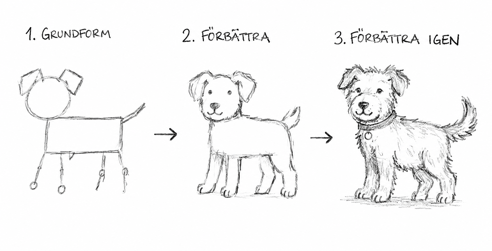

Koncept
Det finns två sätt att ta sig an ett projekt: linjärt eller iterativt.
Linjärt
Planerar allt innan start
Svårt att ändra kurs
Testar bara i slutet
Misslyckas
sent och dyrt
Iterativt
Planerar lite – testar tidigt
Lär av varje försök
Justerar
kontinuerligt
Misslyckas tidigt och billigt
Exempel
Moa och Ben ska skriva ett längre PM. De är lika språkligt begåvade, men deras approach är helt olika.
Moa – linjärt
Planerar strukturen noggrant
Skriver hela texten utan feedback
Lämnar in – stora
ändringar krävs
Måste skriva om halva texten
Ben – iterativt
Skriver en grov inledning snabbt
Visar läraren och får feedback tidigt
Justerar
riktningen innan han fortsätter
Lämnar in – minimala ändringar
Det är bättre att upptäcka fel tidigt än sent. Testa tidigt, justera ofta.
Diskussion i par – 60 sekunder
Hur kan du tillämpa iterativt tänkande när du skriver prov?
Agera
Rita ett djur eller ett fordon i tre cykler. Börja grovt och förfina steg för steg.
